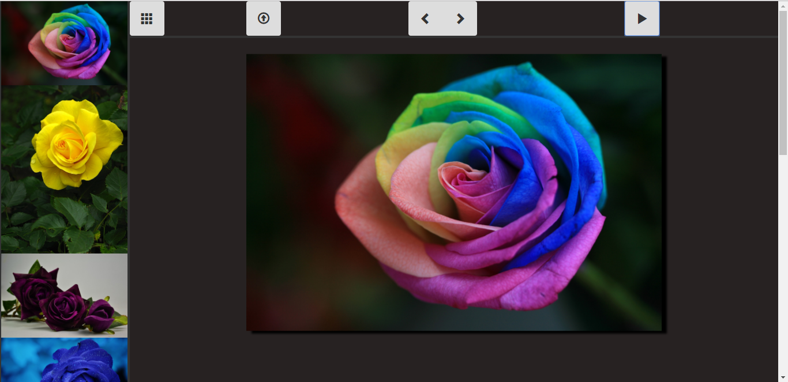

<!--Ongoing Projects Section-->

				<span id="in-progress-projects">
					<div class="row">
						<div class="text-center">
							<span class="section-header">In Progress Projects</span>
						</div>
						<div class="projects-summary text-center">
							Even though these are not yet functional, I thought it would benefit to display the design I have applied to these projects.
						</div>
					</div>
					<div class="row">
						<div class="text-center">
							<button class="btn" id="view-completed">
								<span class="project-section">View Completed Projects</span>
							</button>						
						</div>
					</div>
					<div class="row text-center project-row">					   
						<div class="col-md-6 project">
							<span class="name">Image Slideshow</span><br>
							
						</div>
						<div class="col-md-6 project">
							<span class="name"></span><br>
							
						</div>
						<div class="col-md-6 project">
							<span class="name"></span><br>
							
						</div>
					</div>
				</span>	